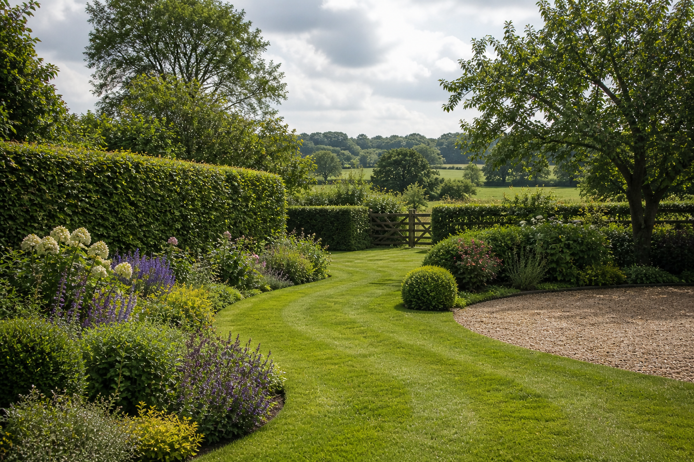
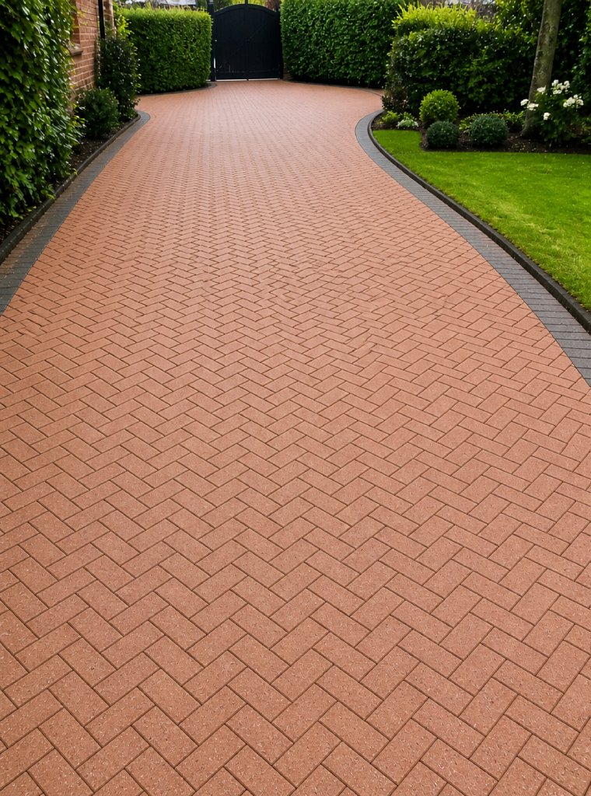

Cutting Grass
One-off cuts, regular maintenance, overgrown recovery and clean edges where the lawn meets paths or beds.

Bradford & nearby West Yorkshire
Clean cuts, sharp hedges, revived patios and driveways, plus garden build projects quoted properly after a look.
Services
Simple, useful work done neatly: regular tidy-ups, pressure washing, and longer improvements priced after seeing the space.
One-off cuts, regular maintenance, overgrown recovery and clean edges where the lawn meets paths or beds.
Light shaping, seasonal tidy-ups and straight, measured lines that make boundaries look intentional.
Pressure washing for moss, grime and weathering so the entrance to your home feels cleaner and safer underfoot.
Revive paving, lift algae and bring back the contrast in slabs without turning the garden into a mess.
Longer projects like beds, borders, paths, sleepers or layout improvements are quoted after a chat and site look, not guessed from a fixed menu.
Experience
Bradford Prime Landscaping is a local two-person team built around hands-on experience. The work is led by real landscaping practice from France, including time working around Mont Saint-Michel, with careful prep, tidy finishes and honest scheduling.
Pressure washing
For washing jobs, photos help estimate the surface, access and level of moss or staining. Larger or awkward areas get quoted after a quick look.

Before AfterQuotes
Grass, hedges and washing can often be estimated from photos. Longer garden projects need a look first because every space has different access, ground conditions and materials.
Message on WhatsApp with your postcode area, photos and the service you want.
We confirm what can be estimated by photo and what needs a quick viewing.
You get a time, a scope and a tidy finish without a sales pitch.
Contact
WhatsApp is best for quick quotes. Photos of the garden, driveway, patio or hedge make it much easier to price honestly.
Bradford and nearby West Yorkshire